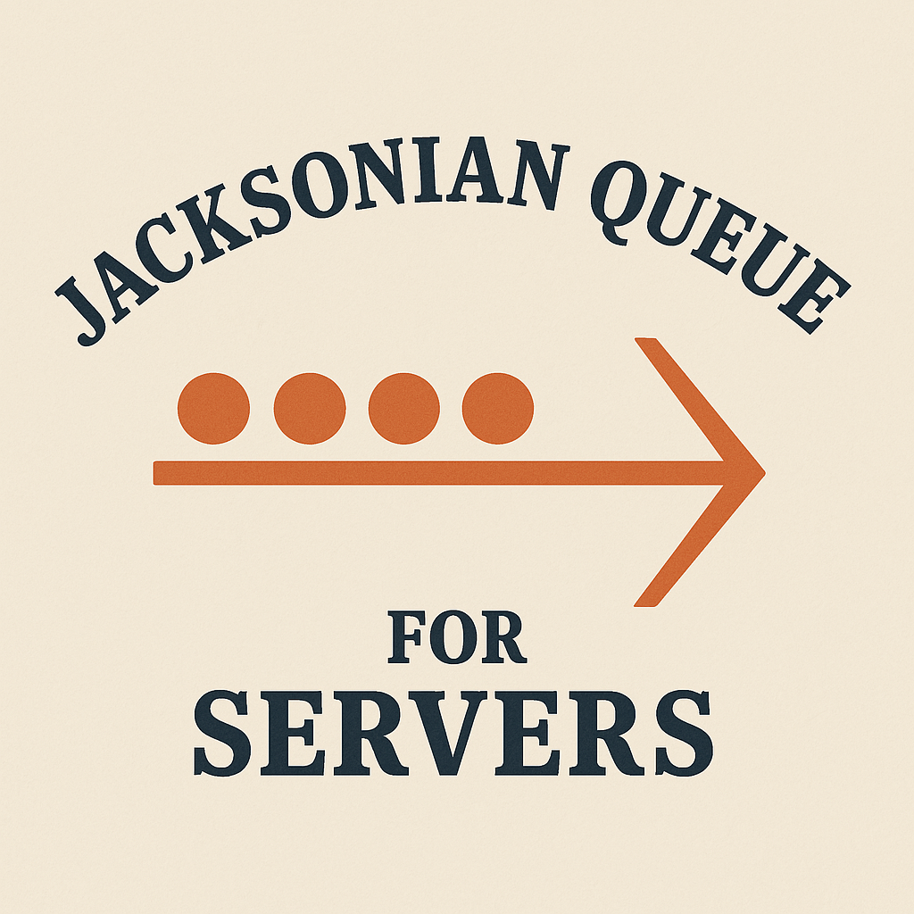
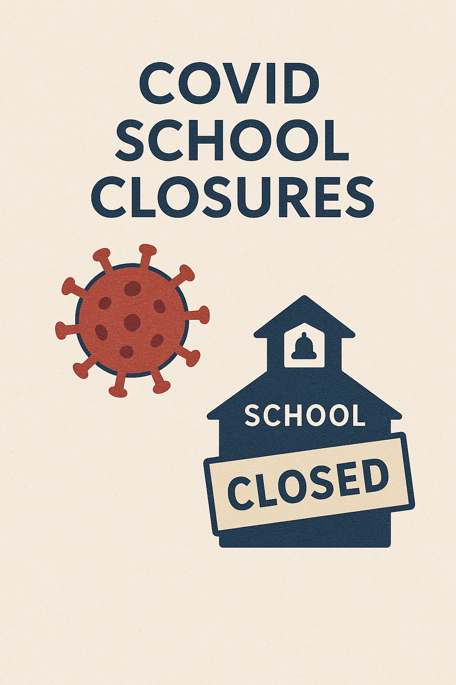
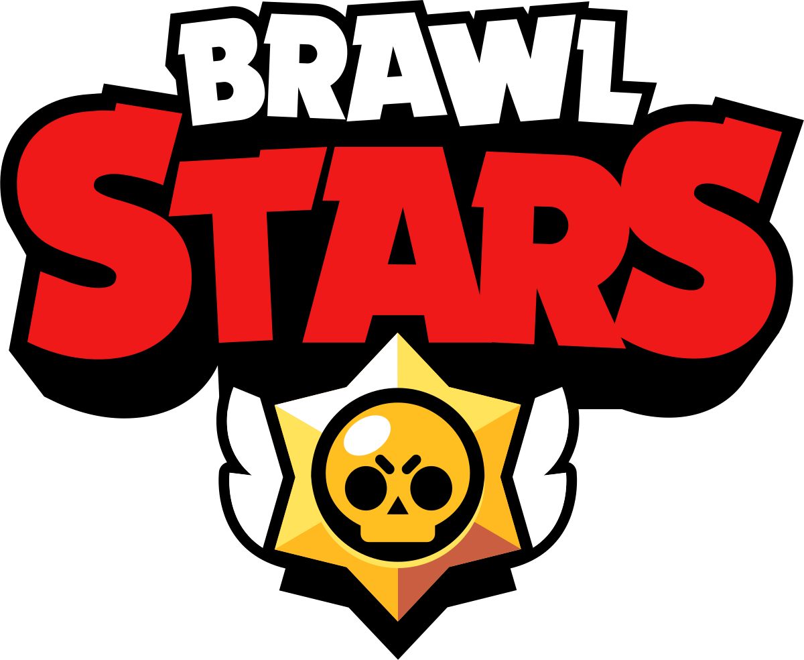
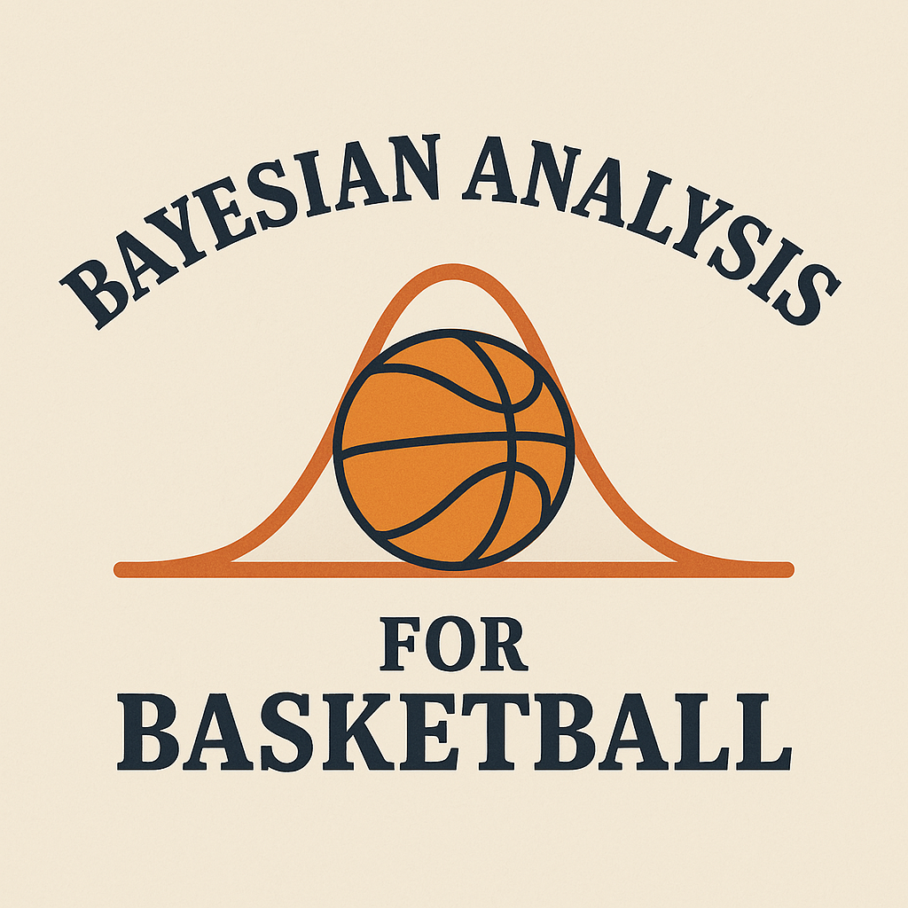
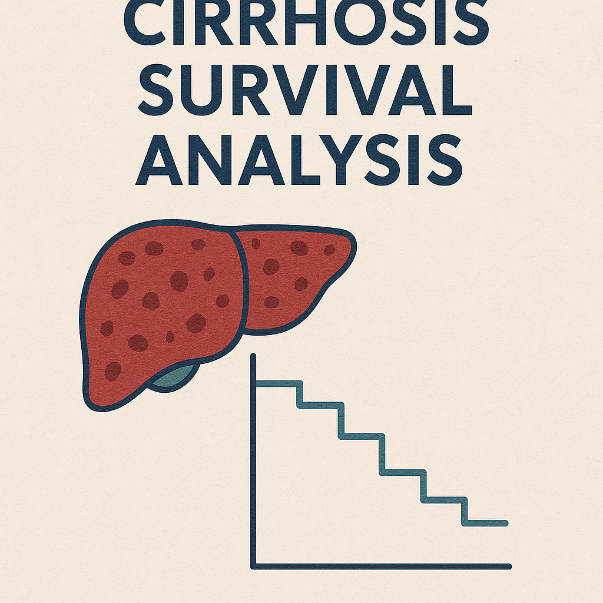
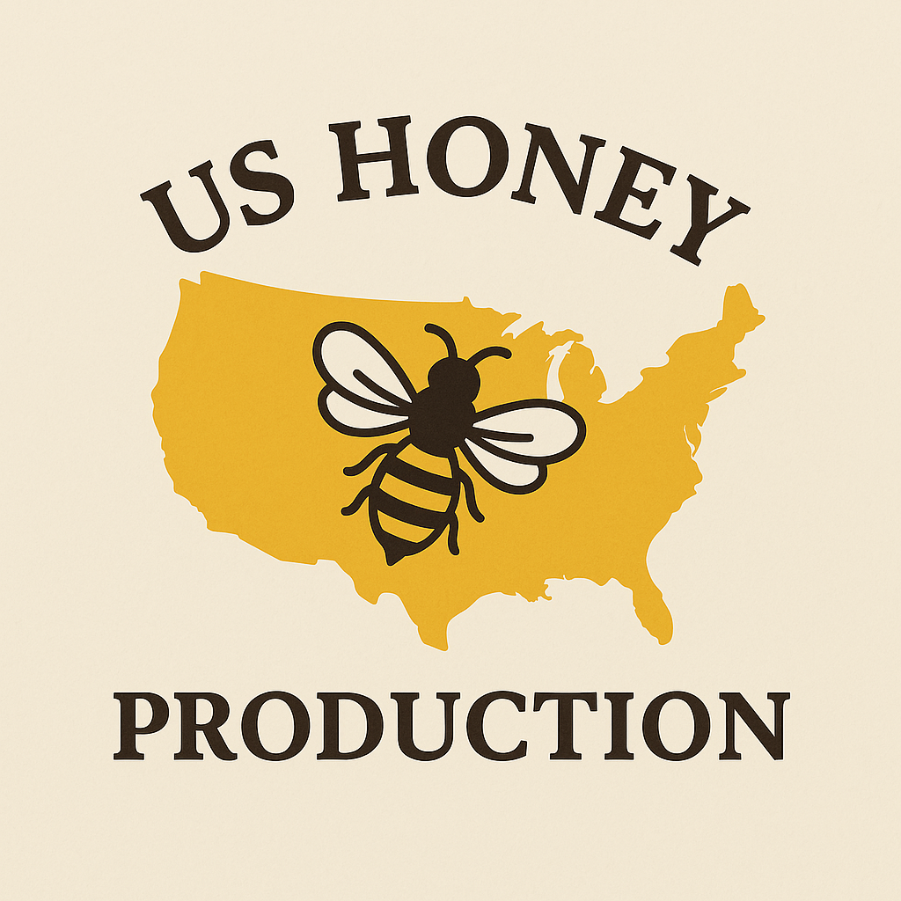

Home
Projects
Resume
Projects
Categories
All
(10)
Project
(10)
SAT Statewide Categorical Analysis Project
Project
Mar 17, 2025
Adam Kong, Sabrina Ahrendt, Franchesca Garcia, Julius Hoffman, Alex Tran

Multiplayer Server Queue Simulation
Project
In this project I aim to research more on the Jackson Network (Jacksonian Network) found in queuing theory. First I will discuss the theory and ideas behind Jackson…
Mar 15, 2025
Adam Kong

School Modality Project
Project
Our
School Modality Project
examines the factors that influenced school districts’ decisions to adopt in-person, hybrid, or remote learning during the 2020-2021 school year. Using publicly available…
Dec 9, 2024
Adam Kong, Alisa Krasilnikov, Dylan Le

Brawl Stars Analysis
Project
Dec 6, 2024
Adam Kong
Sushi DMAIC Process Improvement
Project
Dec 1, 2024
Adam Kong
SUPERCELL Game Analysis
Project
Nov 18, 2024
Adam Kong
2020 World Series Research
Project
Nov 8, 2024
Adam Kong

2023 Basketball Bayesian Analysis
Project
Our research question investigates how usage rate (USG) and minutes played per game (MP) affect an NBA player’s annual salary for the 2022-23 season. Usage rate is the…
Jun 24, 2024
Adam Kong, Cameron An

Cirrhosis Survival
Project
A recent study examined whether D-penicillamine could improve survival in individuals diagnosed with primary biliary cirrhosis. The dataset included 418 participants, but…
Mar 19, 2024
Adam Kong

US Honey Production Project
Project
Honey production in the United States is influenced by multiple factors, including environmental conditions, colony numbers, and market prices. This study examines key…
Dec 6, 2023
Adam Kong, Alisa Krasilnikov, Harshini Karthikeyan
No matching items